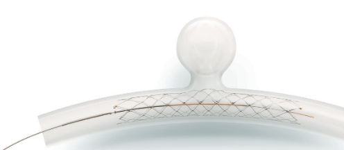

Acclino
O design de célula assimétrica otimizado do Stent de célula fechada com corte a laser garante a mais alta flexibilidade em sua classe. O stent apresenta comportamento de expansão aprimorado, excelente aposição da parede do vaso e ótima conformabilidade, mesmo em anatomias de vasos tortuosos.

Indicação
Orsiro Mission é indicado para melhorar o diâmetro luminal coronário em pacientes com doença cárdiaca isquêmica sintomática devido a lesões estenóticas de novo discretas e lesões de reestenose intra-stent (comprimento ≤ 40mm) em artérias coronárias nativas com diâmetro de referência de vaso de 2,25mm a 4,0 mm, incluindo os seguintes subconjuntos de paciente e lesão: